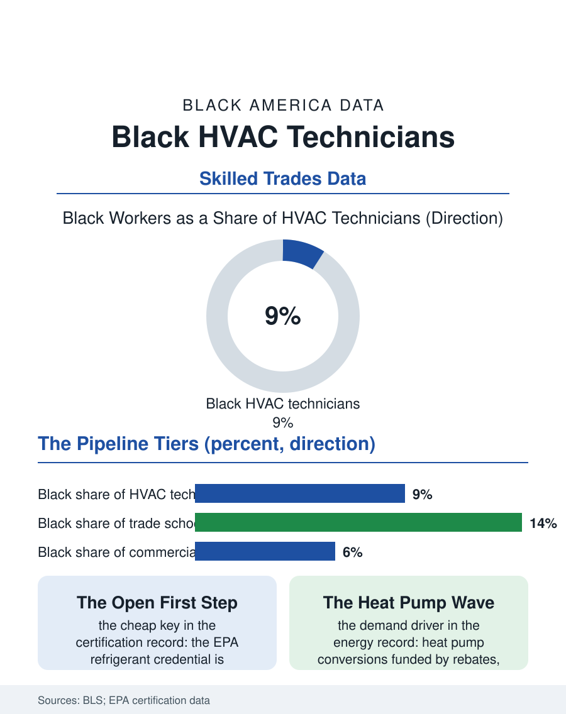

Black Employment
The Refrigerant License: Black HVAC Technicians
HVAC technicians are scarce, well paid, and reachable through a cheap open credential, yet Black workers hold under a tenth of the trade. The HVAC technician file.

Heating and cooling technicians keep the built environment habitable, and the Bureau of Labor Statistics counts Black workers at roughly eight or nine of every hundred of them, in an occupation with strong wages, a chronic shortage, and a licensing ladder that runs from a helper's toolkit to the master contractor's shop. This article reads the HVAC technician file, the employment twin of the business file on the companies these technicians eventually own.
The Certification Staircase
Entry is comparatively open, which makes the file's demographics instructive. The technical floor is the EPA Section 608 certification for handling refrigerants, a test-based credential available without an employer's sponsorship, layered over state and local licenses that vary from registration to full journeyman requirements. Community colleges and proprietary trade schools run the training programs, and their HVAC classrooms enroll Black students at rates above the occupation's incumbent share, one of the clearer pipeline signals in the trades data, suggesting the intake interest exists and the attrition happens later, in the hiring hall that is the service manager's office. The work itself sorts technicians into tiers with real wage distance between them: installers on construction crews, service technicians riding the diagnostic routes where the trade's money concentrates, and the commercial and industrial specialists who maintain the chillers and systems of hospitals and high-rises. Black technicians in the workforce data cluster more heavily in installation and residential service and more thinly in the commercial specialist tier, a distribution that tracks access to the manufacturer training and the large mechanical contractors where the specialist careers are made. The wage data within the occupation show the usual compression once licensed and experienced, the credential doing its equalizing work as it does across the trades files.
Season, Shortage, and the Employer's Market
HVAC demand runs in weather spikes, heat waves and cold snaps that produce the industry's legendary overtime, and in the long replacement cycle of the installed base. The shortage the trade press documents is not cyclical; the workforce is aging, the training pipeline has not kept pace with electrification's added demand, heat pumps above all, and employers compete for experienced service technicians with signing bonuses and tool allowances that would have been unthinkable a generation ago. Scarcity is leverage, and the file asks the standing question of who holds it. Black technicians positioned in the shortage's center, experienced residential and commercial service techs in the southern metros where cooling is life-safety infrastructure, command strong wages and mobility between shops. The counterweights are the trade's physical ledger: rooftops in August, refrigerant and electrical hazards, and the on-call rotations that tax family life, all recorded in the occupational health data. The industry's consolidation, private equity platforms buying the shops, is professionalizing the employment relationship, standardized pay bands and training ladders replacing the foreman's discretion, a change whose demographic effects the early workforce analyses read as mildly equalizing, since posted ladders distribute what networks used to.
The Technician's Fork
Every experienced HVAC technician reaches the file's fork: the platform's ladder or the truck of one's own. The business file in this atlas describes the second road, its distributorships and credit lines; the employment file records why so many take the first, the master's wages with a fraction of the risk, the truck, tools, and insurance provided, and a schedule someone else fills. The training system's task is to keep both roads open, which means the apprenticeship and community college pipelines must deliver not only diagnostic skill but the business literacy the second road prices, estimating, service agreements, and the customer book. Heat pump conversion programs, funded through federal and state energy policy, are writing the file's next chapter in real time: rebate-driven installation demand concentrated in the housing stock of the cities where Black technicians and Black homeowners both cluster, with several jurisdictions attaching workforce provisions to the money. The HVAC file closes where the trades section always closes, on the intake ledger. The shortage guarantees the work. The certification is cheap to reach and nationally legible. The employers are bidding against each other in public. Rarely does an occupation advertise its own opportunity this plainly, and the question the file leaves is whether the training seats, the hiring offices, and the tool allowances will be arranged so that the technicians the shortage enriches look like the country whose air they condition.
More in Black Employment
The Black Unemployment Rate: The Two-to-One Pattern
Black unemployment runs at roughly twice the White rate — 5.5 percent against 3.3 percent in annual averages — a ratio stable across five decades of federal data. How it is measured and why it persists.
Black Median Weekly Earnings: The 80-Cent Ratio
Black full-time workers earn a median of about $900 a week — roughly 80 cents for every dollar White workers earn. The BLS earnings data by group, gender, and occupation.
Black Labor Force Participation: Working at National Rates
Black labor force participation runs at roughly the national rate — and Black women participate at higher rates than White women. The BLS participation data.
Source: U.S. Bureau of Labor Statistics, Current Population Survey and Occupational Outlook Handbook; EPA Section 608 certification program data.